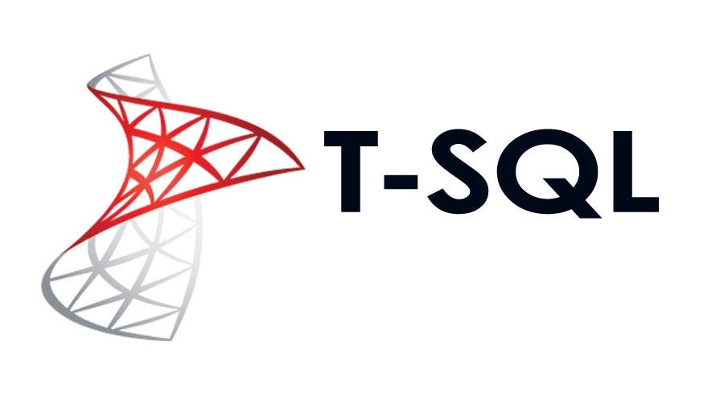

Grouping Sets, Rollup, and Cube
This project focuses on advanced aggregation techniques in SQL Server. It demonstrates how grouped summaries can be generated at multiple levels without writing separate queries for each aggregation layer.

SQL Server portfolio work covering analytical queries, window functions, triggers, semi-structured data, CTE logic, and SQL-to-Python integration.
This section of the portfolio presents a focused collection of T-SQL projects created in Microsoft SQL Server. The work covers both analytical query writing and more advanced database features such as triggers, Common Table Expressions, XML and JSON handling, and Python-based downstream data processing.
The goal of these projects was to demonstrate that SQL knowledge goes beyond basic querying. These scripts show how SQL Server can be used for structured analysis, modular query design, database-side automation, and integration with external analytical tools.
Writing complex aggregation logic, ranking queries, grouped summaries, and partition-based calculations for reporting scenarios.
Using triggers and SQL Server logic to automatically react to changes in database tables and support audit-style workflows.
Working with XML and JSON content inside SQL Server and extracting useful values from non-tabular structures.
Connecting SQL query results to pandas workflows in Python for additional transformation and analysis.
Although the topics differ, the scripts follow a shared logic: retrieve or prepare structured data, apply SQL Server-specific techniques, and transform the result into something easier to interpret, automate, or analyze.
Data Retrieval → T-SQL Logic → Aggregation / Transformation → Advanced SQL Server Features → Analytical Output → Optional Python Integration
The T-SQL portfolio is organized into two logical groups. The first group focuses on analytical query techniques, while the second highlights more advanced SQL Server-specific features.

This project focuses on advanced aggregation techniques in SQL Server. It demonstrates how grouped summaries can be generated at multiple levels without writing separate queries for each aggregation layer.

This topic demonstrates analytical functions such as PARTITION BY, ranking logic, and row-based calculations. It is especially useful for report-style SQL where grouped comparisons must remain at row level.

This project shows how complex SQL queries can be structured into clearer logical blocks. CTEs make multi-step transformations easier to read, maintain, and extend.

This project focuses on automatic database-side actions triggered by data modification events. It demonstrates how SQL Server can support audit logic, logging, and event-driven control directly inside the database.

This topic demonstrates how SQL Server can process semi-structured data formats. It covers extracting values from XML and JSON content and combining them with relational logic.

This project extends SQL work into Python by loading SQL Server query results into pandas DataFrames. It demonstrates how database querying and Python-based analysis can be combined in one workflow.
These T-SQL projects are presented mainly as portfolio demonstrations rather than standalone GitHub-ready software applications. Their purpose is to showcase SQL Server query design, analytical logic, automation features, and data integration workflows. For this reason, the scripts used in these projects can also be made available through GitHub as supporting portfolio material.